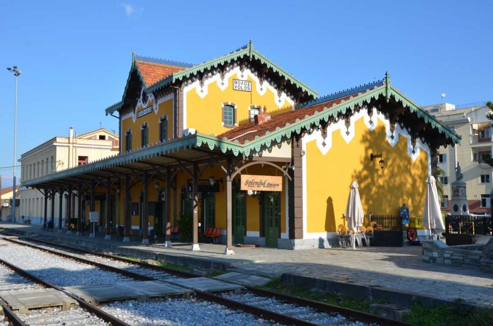
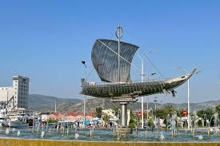
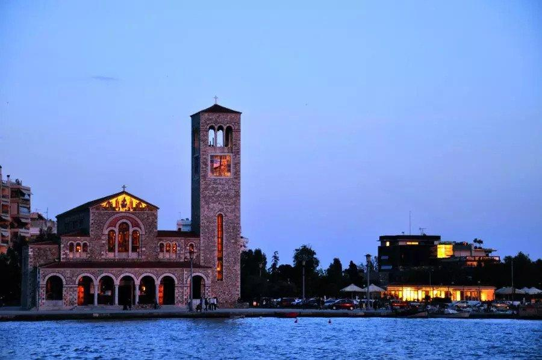
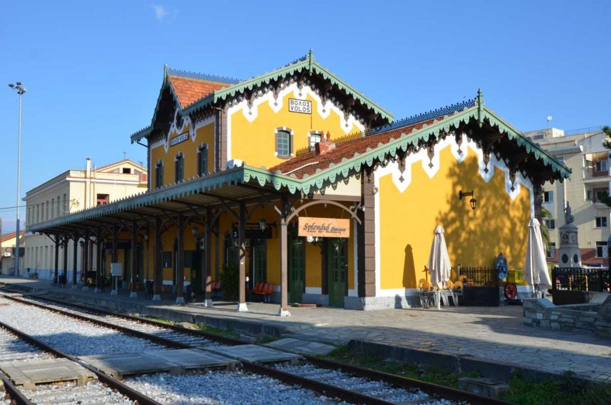
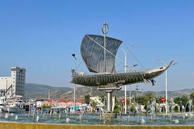
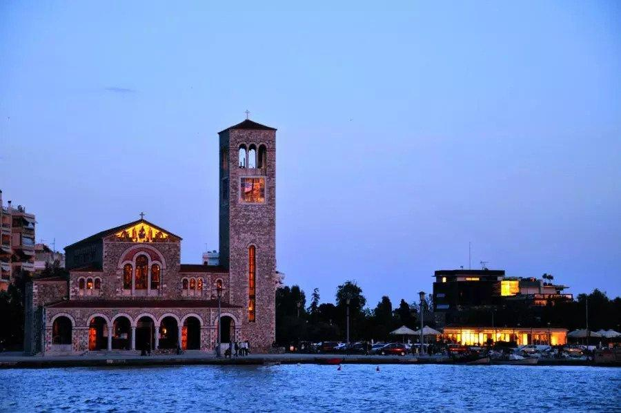

Βόλος
Ο Βόλος είναι μια από τις μεγαλύτερες και πιο γοητευτικές πόλεις της Ελλάδας, χτισμένος στο κέντρο της χώρας, στους πρόποδες του Πηλίου και στον μυχό του Παγασητικού κόλπου. Αποτελεί το σημαντικότερο λιμάνι της Θεσσαλίας και ένα από τα πιο ενεργά εμπορικά λιμάνια της χώρας, συνδέοντας την ηπειρωτική Ελλάδα με τα νησιά των Σποράδων.Η ρυμοτομία του είναι εξαιρετική, με πολλούς πεζόδρομους και την πασίγνωστη παραλία του, που αποτελεί σημείο αναφοράς για τους κατοίκους και τους επισκέπτες.
 






Η ιστορία του Βόλου είναι βαθιά ριζωμένη στη μυθολογία. Η περιοχή ταυτίζεται με την αρχαία Ιωλκό, την πατρίδα του Ιάσονα, από όπου ξεκίνησε η θρυλική Αργοναυτική Εκστρατεία με το πλοίο Αργώ για την αναζήτηση του Χρυσόμαλλου Δέρατος. Επίσης, το γειτονικό Πήλιο αναφέρεται ως η θερινή κατοικία των δώδεκα θεών του Ολύμπου και η χώρα των Κενταύρων, με γνωστότερο τον σοφό δάσκαλο Χείρωνα.
Στη νεότερη ιστορία, ο Βόλος αναπτύχθηκε ραγδαία ως βιομηχανικό και εμπορικό κέντρο στα τέλη του 19ου και αρχές του 20ού αιώνα. Πολλά από τα παλιά εργοστάσια και τις αποθήκες έχουν σήμερα μετατραπεί σε χώρους πολιτισμού ή πανεπιστημιακά ιδρύματα, καθώς η πόλη είναι έδρα του Πανεπιστημίου Θεσσαλίας. Η αρχιτεκτονική του Βόλου, αν και επλήγη από τους σεισμούς του 1955, διατηρεί σημαντικά νεοκλασικά στοιχεία, όπως το κτίριο του Δημοτικού Θεάτρου και ο σιδηροδρομικός σταθμός, σχεδιασμένος από τον Εβαρίστο ντε Κίρικο.
Ένα από τα πιο χαρακτηριστικά πολιτισμικά στοιχεία του Βόλου είναι τα φημισμένα τσιπουράδικα. Ο θεσμός αυτός ξεκίνησε από τους πρόσφυγες της Μικράς Ασίας το 1922 και εξελίχθηκε σε μια μοναδική ιεροτελεστία. Στα εκατοντάδες τσιπουράδικα της πόλης, το τσίπουρο σερβίρεται πάντα συνοδεία διαφορετικών θαλασσινών μεζέδων, οι οποίοι εναλλάσσονται και πληθαίνουν όσο συνεχίζεται η παραγγελία, αποτελώντας βασικό στοιχείο της κοινωνικής ζωής της πόλης.
Ο Βόλος αποτελεί ιδανικό προορισμό καθ' όλη τη διάρκεια του έτους, συνδυάζοντας μοναδικά το βουνό με τη θάλασσα. Τον χειμώνα προσφέρει άμεση πρόσβαση στο χιονοδρομικό κέντρο του Πηλίου και τα γραφικά ορεινά χωριά όπως η Μακρινίτσα και η Πορταριά, ενώ το καλοκαίρι οι επισκέπτες απολαμβάνουν τις πολυάριθμες παραλίες του Παγασητικού και του Αιγαίου.